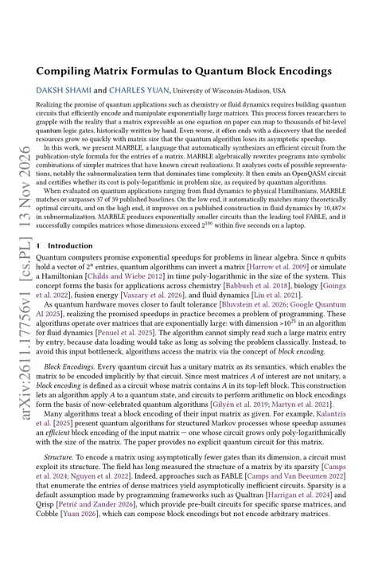

Daksh Shami and Charles Yuan verify MARBLE's rewrite rules in Lean 4
The MARBLE language compiles publication-style matrix formulas into quantum circuits, applying algebraic rewrite rules that decompose each matrix into simpler matrices with known circuits; Lean 4 proofs show every rule preserves matrix semantics. MARBLE matches or surpasses 37 of 39 published baselines and produces exponentially smaller circuits than the leading tool FABLE.

Checked against: arXiv:2611.17756paperswithlean.com